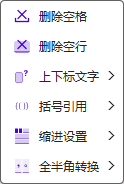

Ribbon菜单PPT助手中如下图所示部分可对PPT对象设置标题样式及位置格式刷操作等四项操作。

本功能的应用场景为，当某一页幻灯片的一个图形对象已调整完位置、大小，此时需要将其他页面的类似的对象也要按此位置和大小进行调整时，可以通过此功能实现。相当于跨页面对齐功能。该功能为组合按钮，为一系列对齐按钮以及设置按钮组成，如下图：

对齐选项共为上下左右以及四角共8个方位可以选择。每次选择使用过一个按钮后，该按钮进入Ribbon界面，后续执行操作不用再次通过下拉菜单选择。
设置形状宽度相等、高度相等、大小相等为三个选项，三个选项为单一选择，每次只能勾选其中一项。勾选后，当执行对齐操作时，也会根据选项执行改变图形尺寸的操作。
复制当前图形位置将当前选中的对象的定位及尺寸设置到程序参数中，一般情况下，该操作为使用本功能的第一步。每次设置的数据会持续保存至下一次更改设置，或者退出PowerPoint程序。
尽管通过以上设置和操作，已足够完成该类操作，但程序仍保留了手动设置定位和尺寸参数的操作界面，以便使用者希望更精确的控制图形的位置及大小。通过手动输入窗口可以设置参数为幻灯片的页面尺寸边界。
开启PowerPoint程序时，未经任何设置，默认的定位为幻灯片左上角坐标原点位置，右边界25.40cm，底边界19.05cm，默认尺寸宽度和高度均为3.00cm。
关于位置尺寸刷的特别说明：
例如：如果一个宽5cm，高度1cm的文本框，通过旋转90°处理，对于PowerPoint而言，它的属性仍然是宽5cm，高度1cm；但将此文本框通过位置尺寸刷设置时，如果指定宽度，修改的将是高度值，指定高度，修改的将是宽度值。
本功能的应用场景为，当PPT用于展示一个很系统的方案，涉及标题多，且层级明确的情况下。甚至PPT本身可以成为一本简版报告，那么这个功能类似于Word的多级列表，可以自动更新标题编号。
点击设置标题样式（按钮的上半部分）则调出标题样式的设置界面：

本程序共设置了五级标题，每一级标题都可以通过右侧的样式设置进行标题样式设置。可以设置标题的编号的样式，程序共提供了阿拉伯数字、简体中文、繁体中文、大写字母、小写字母、罗马数字六种形式的编号。可以为编号设置前缀和后缀。一级标题不能设置为多级标题，二至五级标题可以勾选设置为多级标题，但使用多级标题后，编号样式只能为阿拉伯数字。设置完成后需要点击保存按钮保存设置，方能生效。
程序仅支持将文本框对象设置为标题。添加方式为，选中要添加为标题的文本框对象，然后在标题样式列表中选择需要添加的标题层级，同时，可以根据需求设置单个标题的功能，如缩进，更新编号，重复上一个编号。最后点击添加样式到对象按钮，界面会提示添加成功信息。
当选择对象只有1个，且为设置过标题样式的对象时，程序界面会提示选择标题样式的等级，以及相应的设置，更改设置后再次添加样式会覆盖上一次的设置，相当于更改标题样式。添加标题样式、移除标题样式可以批量进行。
关于缩进？
本程序可以设置是否采用缩进样式，但是缩进量由PowerPoint程序根据设置确定，本程序按照标题层级缩进。
关于编号更新及重复上一个编号？
本程序可以单独控制某个设置为标题样式的更新，或者不更新。某些情况下，一个标题的内容在一张幻灯片上不能展示完，内容延续到下一张幻灯片，此时，如果还想在延续的幻灯片上保留标题，则可以采用使用上一个标题编号的选项，保持编号的正确性。
本程序通过文本框定位坐标确定标题的排序，按幻灯片顺序从前到后，单张幻灯片内从上到下，从左到右，依次编号。
更新所有标题
该功能将更新当前PPT文件中所有设置为标题样式的对象，同时，也可以通过Ribbon下拉菜单中执行更新。
移除标题样式
通过标题设置界面的移除标题样式只能移除图形对象中的样式设置，无法移除保存在文档中的样式设置。通过本程序Ribbon界面下拉菜单中移除所有标题样式的功能，则可以移除包括图形对象与文档中所有的标题设置。
关于标题样式功能的特别说明：
该功能为依托于标题样式功能，只有在设置了标题样式的前提下才能自动生成一个标题目录。该目录不具备自动更新能力，当文档中各标题的内容发生变化时，需要重新插入目录，以更新目录内容。
插入目录操作可以不选择任何对象进行操作，程序会以默认样式创建一个文本框并插入目录内容。同时，插入目录也支持选择一个文本框来使用本功能，目的是方便保留原来使用过的目录文本框的样式设置，仅更新目录内容。如果所选文本框存在内容，将被导入的目录内容覆盖。
该功能包含拆分与合并两个独立的功能。拆分功能只能选择一个文本框对象进行，拆分以文本内容的回车符为拆分位置，也就是文本框里的每一个自然段落将被拆分出来成为一个新的文本框。新文本框保留拆分文本框内第一段的属性设置。合并功能可以将选中的多个文本框内容合并为一个文本框内的多段内容。内容排序以文本框的位置决定，从上到下，从左到右。
该功能可以将选定的PPT页面内，指定的对象的字体替换为选定的字体。
目标字体指替换前所使用的字体名称，此处可以选择所有字体选项，如果指定名称，则仅替换该名称的字体为新的字体。
字号调整，通常情况下仅替换字体的时候，不对该选项做任何设置即可，或者留空。则只是替换字体，并不修改字号大小。需要时，也可以设置替换字体后所使用的字体大小。通过下拉菜单可以选择汉字字号，诸如四号、五号等。也可以直接在输入框内输入以磅为单位的字号（不需要单位）。字体大小应介于 1~4000之间，且为0.5的整数倍。
特别说明，字号大小调整支持相对大小，例如设置为+5，则替换完字体后，程序会将字号调大5磅，同理-5则调小5磅。
替换字体的同时，勾选更改颜色选项，则会按照其后的颜色按钮所选颜色更改文字的颜色。无论颜色按钮当前是否选择颜色，都以是否勾选更改颜色选项进行实际更改操作。
替换范围指PPT的页面范围，可以通过PPT页面导航栏选择一些页面操作，也可以针对全文进行操作，也可以自定义输入一些页面，例如“1,3-5”等。注意连续页面用-连接，不同范围用半角逗号连接。注意：无论PPT的页码如何设置，PPT的第一页编号始终为1，并顺序编号。
对象选择，当选择所有对象时，其下的子对象将不可选择。当需要针对性的替换某类对象的字体时，取消勾选所有对象，再进行子对象选择。
文本框包括常规的横向竖向文本框之外，还包括占位符文本框。图形对象包括自动图形以及自由曲线图形。表格对象仅指PPT中的表格对象，不包括表格图片以及通过文档对象插入的Excel等表格对象。图表对象指通过PPT插入的类似折线图、柱状图、饼图等一类带有数据表的图表。SmartArt指通过PPT插入的SmartArt对象，例如流程图、结构图一类的自动图形。
本功能是对PowerPoint本身查找替换功能的补充，支持正则表达式。
二级查找替换该功能用于在一级查找的基础上进行二次的查找替换。例如查找“书名为：<***>”,的一级查找结果中，将“<”替换为“《”，这样不符合一级查找条件的内容将不会被替换。
忽略大小写指查找时忽略英文字母的大小写区别。
正则表达式启用后无论查找内容、输入内容都按正则表达式的规则解析，包括二级查找替换。
相同格式范围内查找，启用后，在同一段落内，如果使用了不同的格式（例如：字体、颜色、样式等），那么也相同格式的内容作为同一查找区间。例如段落内容：“落霞与孤鹜齐飞，秋水共长天一色。”中搜索“落霞与孤鹜齐飞”，如果勾选相同格式范围内查找，则查找结果为空。因为“落霞与孤鹜”几个字的颜色不同。
查找范围可以设定为当前页面、选中页面以及全文范围。确认查找替换将会对所选范围内所有的查找结果进行替换。
关于文字查找替换的说明：
本功能主要为便捷、批量设置一些文本的格式。目前包含：删除空格、删除空行、上下标设置、添加括号引用标点符号、首行缩进设置以及符号全半角转换功能。
删除空格，可以删除除英文字母之间的空格以外的所有空格。对于英文字母之间的空格，可能为正常的单词分隔，但不识别不正常的英文字母之间空格，例如：PowerP oint，尽管此处空格不合理，但程序不会检查单词分隔是否正确，仍然会保留此空格。
删除空行，可以删除所选范围或对象文本内容中的空行。所谓的空行指只包含空格的行，一般以回车符/r结束。
上下标格式，可以将选定图形内的文本中指定的文字设定为上标格式或者下标格式。对于平方上标、立方上标格式，程序自动匹配m或M字符之后的2或者3字符，将其设定为上标，例如：mm2，m2，cm3，km3之后的数字；而数字上标或者数字下标，则对于所有的数字字符生效。如果需要更多样的设置，可以使用自定义上下标功能，将调出自定义上下标窗口，支持正则表达式匹配。
括号引用，内置20种括号或者引用符号，当选中一段文本时，使用该功能，自动在选中文本的前后添加此引用符号。
首行缩进，可以将所选对象的各个段落设置为首行缩进2字符，以汉字文本宽度和字高为单位，当字体调整或者文字高度修改后，需重新运用功能调整。同时也可以移除首行缩进。
字符全半角转换，主要用于特殊符号以及标点符号的全半角之间的转换，用于文本对齐。全半角对应关系如下表：
| ~ | ! | @ | # | $ | % | & | * | ( | ) | - | + | = | [ | ] | { | } | \ | / | < | > | : | ; | . | ? |
| ～ | ！ | ＠ | ＃ | ￥ | ％ | ＆ | ＊ | （ | ） | － | ＋ | ＝ | 【 | 】 | ｛ | ｝ | 、 | ／ | 《 | 》 | ： | ； | 。 | ？ |
文本格式说明：